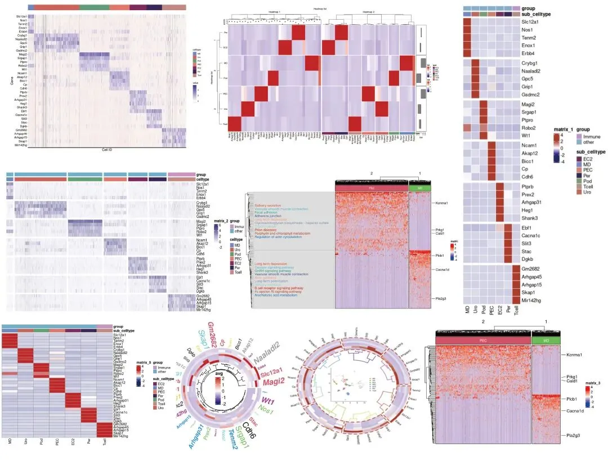
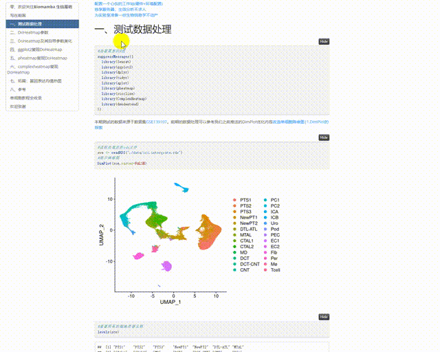
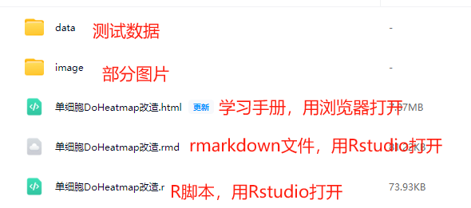

改造单细胞DoHeatmap
原文：https://mp.weixin.qq.com/s?__biz=MzAwMzIzOTk5OQ==&mid=2247527762&idx=1&sn=ba7c8a4cb704e71fa86ebfe1f19bffea&chksm=9b3c1402ac4b9d142d99d739a6de3623182488fd6fa1b312e773b39a1a317642ddc4fa422997#rd 合集：单细胞教程全收录

写在前面

 随着我们课程的持续深入，以及各位小伙伴分析技能的日益提升，目前很多同学已经不满足于Seurat的可视化功能并希望能够做出一些改进的可视化 。我个人对可视化的方式改进其实并不感冒，画图嘛，跟翻译一样信达雅 即可，没必要盲目追求视觉效果。不过这也并不方案我给大家做这类的教程。我们准备出一系列单细胞测图片改造计划 的推送，大家如果有任何关于可视化的想法，也可以通过文末客服微信联系我们。这次的内容为对单细胞中的Seurat::DoHeatmap 的改造，包括DoHeatmap参数介绍、DoHeatmap参数美化、ggplot2复现DoHeatmap、pheatmap绘制热图、ComplexHeatmap绘制热图、基因表达均值热图、环形热图等可视化内容。
本教程基于Linux中的Rstudio环境演示，计算资源不足的同学可参考：
足够支持你完成硕博生涯的生信环境
配置一个心仪的工作站(硬件+环境配置)
独享服务器，生信分析不求人
为实验室准备一份生物信息学不动产
随着我们课程的持续深入，以及各位小伙伴分析技能的日益提升，目前很多同学已经不满足于Seurat的可视化功能并希望能够做出一些改进的可视化 。我个人对可视化的方式改进其实并不感冒，画图嘛，跟翻译一样信达雅 即可，没必要盲目追求视觉效果。不过这也并不方案我给大家做这类的教程。我们准备出一系列单细胞测图片改造计划 的推送，大家如果有任何关于可视化的想法，也可以通过文末客服微信联系我们。这次的内容为对单细胞中的Seurat::DoHeatmap 的改造，包括DoHeatmap参数介绍、DoHeatmap参数美化、ggplot2复现DoHeatmap、pheatmap绘制热图、ComplexHeatmap绘制热图、基因表达均值热图、环形热图等可视化内容。
本教程基于Linux中的Rstudio环境演示，计算资源不足的同学可参考：
足够支持你完成硕博生涯的生信环境
配置一个心仪的工作站(硬件+环境配置)
独享服务器，生信分析不求人
为实验室准备一份生物信息学不动产
本教程图片集锦 ：

-Biomamba

视频教程
B站同步播出，连播更方便，文末阅读原文可直达：https://www.bilibili.com/video/BV1S44y1b76Z?p=20
-Biomamba
所见即所得
学习手册以html文件格式提供，可在浏览器中打开并翻阅学习

教程目录 ：
一、测试数据处理
二、DoHeatmap参数
三、DoHeatmap参数美化
四、ggplot2复现Doheatmap
五、pheatmap复现DoHeatmap
六、ComplexHeatmap复现DoHeatmap
1、计算差异基因2、ComplexHeatmap绘图3、制作文本注释
七、拓展：基因表达均值热图
1、pheatmap2、pheatmap美化3、增加散点图/柱状图4、circlize圆形热图
文末下载链接中包含的内容：

测试文件约3.68GB ，大家注意按需下载！
解锁前需阅读：2025订阅须知

文末还可解锁以下内容


2025订阅合集持续更新中，联系客服微信[Biomamba_yunying]可以219￥获取全部资料(包括今年后面更新的内容),目前我们还开放终身订阅~ 。当然，付费不是目的，以下资料都可以通过转发领取(更推荐这种方式)。
2025订阅须知《Cell》复现|中性粒细胞scRNA-seq图谱阐明抗肿瘤抗原呈递效力 代码复现|scRNA-seq绘制透明细胞肾癌的免疫微环境

订阅后获取学习手册下载链接：